Σε αυτό το δωρεάν μάθημα SQL χρησιμοποιώντας την PostgreSQL θα δούμε τις βασικές εντολές με τις οποίες ζητάμε να δούμε όλα τα δεδομένα από έναν πίνακα της βάσης όπως και πως μπορούμε να ζητήσουμε δεδομένα από μεμονωμένες στήλες του πίνακα.
Πριν όμως ξεκινήσουμε ας περιγράψουμε λίγο την δομή της Northwind βάσης που εγκαταστήσαμε στην προηγούμενη ενότητα.
Η Northwind καταγράφει όλες τις συναλλαγές πωλήσεων που πραγματοποιούνται μεταξύ της εταιρείας και των πελατών της καθώς και τις συναλλαγές αγοράς μεταξύ της εταιρείας και των προμηθευτών της. Επειδή η PostgreSQL ανήκει στην κατηγορία των RDBMS (Relational Database Management System) βάσεων αυτό σημαίνει ότι επιτρέπει την ύπαρξη δεδομένων χωρισμένα σε λογικές και διαχειρίσιμες μονάδες που ονομάζονται πίνακες. Επίσης υπάρχουν σχέσεις ανάμεσα στους πίνακες έτσι ώστε να μπορούμε να λαμβάνουμε εύκολα τα δεδομένα από πολλαπλούς πίνακες ταυτόχρονα, ή για να θέσουμε κάποιους περιορισμούς κατά την εισαγωγή τους στην βάση. Αυτή η σχέση πινάκων η οποία υπάρχει στην βάση Northwind αντιπροσωπεύεται από το παρακάτω σχεδιάγραμμα.
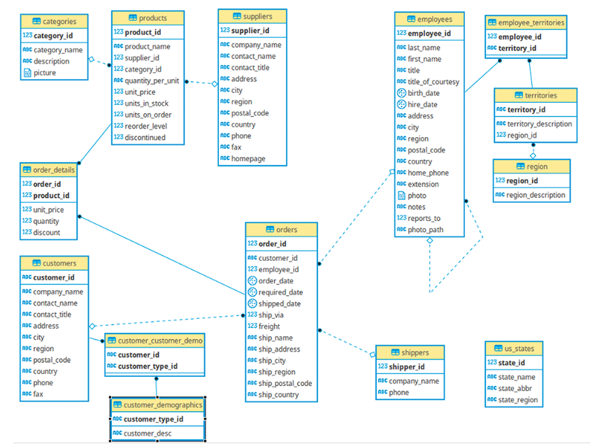Για να μπορέσουμε να λάβουμε δεδομένα από την βάση χρησιμοποιούμε την Structured Query Language (SQL). Επειδή υπάρχουν πολλές εντολές στην SQL για διαφορετικούς σκοπούς, αυτές έχουν κατηγοριοποιηθεί σε 5 κατηγορίες. Με αυτό τον τρόπο είναι ευκολότερα και να τις μάθει κάποιος αλλά και να τις αναζητήσει στο documentation.
Data Definition Language (DDL): Κάτω από αυτή την κατηγορία ανήκουν οι εντολές με τις οποίες μπορούμε να αλλάξουμε ή να τροποποιήσουμε την δομή της βάσης. Για παράδειγμα η εντολή CREATE TABLE προσθέτει έναν καινούργιο πίνακα στην βάση.
Data Query Language (DQL): Εδώ ανήκουν οι εντολές με τις οποίες μπορούμε να λάβουμε δεδομένα από την βάση. Σε αυτή την κατηγορία ανήκει και η εντολή SELECT.
Data Manipulation Language (DML): Εδώ ανήκουν οι εντολές εκείνες (όπως INSERT, UPDATE, DELETE) με τις οποίες μπορούμε είτε να τροποποιήσουμε τα δεδομένα που είναι αποθηκευμένα στους πίνακες είτε να προσθέσουμε καινούργια, είτε να τα διαγράψουμε.
Data Control Language (DCL): Αυτές οι εντολές χρησιμοποιούνται για να δώσουμε δικαιώματα πρόσβασης στη βάση ή να τα αφαιρέσουμε. Σε αυτή την κατηγορία ανήκουν εντολές όπως GRANT και REVOKE.
Transaction Control Commands: Εδώ ανήκουν οι εντολές που διαχειρίζονται πολλαπλά δεδομένα μαζί σαν μια ομάδα. Τέτοιου είδους εντολές είναι η COMMIT και η ROLLBACK.
Γυρνώντας πίσω στο σενάριο μας λοιπόν και συγκεκριμένα στην βάση Northwind θα επιθυμούσαμε για αρχή να δούμε όλα τα δεδομένα που υπάρχουν στον πίνακα customer. Πως μπορούμε να το κάνουμε αυτό με την SQL?
Στο γραφικό περιβάλλον της PostgreSQL μπορούμε πολύ εύκολα να λάβουμε δεδομένα μέσα από τον Query Editor. Για να το ανοίξουμε, πατάμε στο εικονίδιο της βάσης με το βέλος, επάνω αριστερά στην οθόνη.
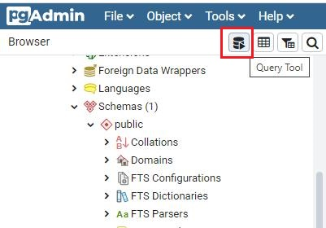Τώρα μέσα στο Query Editor που έχει ανοίξει στα δεξιά της οθόνη σας μπορούμε να γράψουμε τα SQL αιτήματα μας.
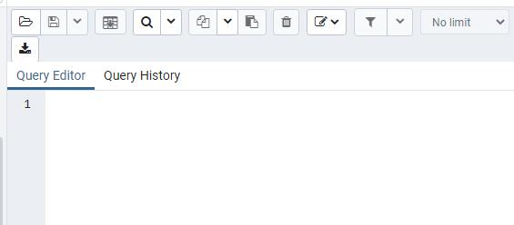Στην PostgreSQL η εντολή SELECT είναι εκείνη που χρησιμοποιείται για να ξεκινήσει ένα query στην βάση και να λάβουμε δεδομένα από έναν πίνακα ή από πολλαπλούς πίνακες. Ας γράψουμε ένα απλό SELECT query μέσα στον Query Editor ας το εκτελέσουμε και μετά θα εξηγήσουμε τι ακριβώς επιτύχαμε με αυτό.
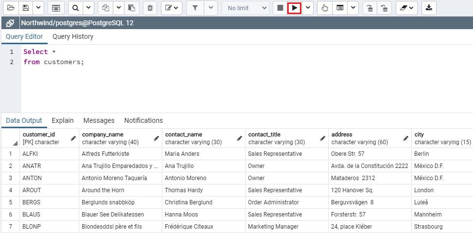Στην SQL αυτό που θα καταφέρετε μετά από κάποια μικρή εξάσκηση με τις εντολές είναι να μπορείτε να μεταφράζεται τις λέξεις, που στην ουσία είναι οι απαιτήσεις σας, σε SQL εντολές. Σε αυτό το παράδειγμα, αυτό που μας είχε ζητηθεί σαν αίτημα είναι το εξής: “Θέλουμε να δούμε όλα τα δεδομένα μέσα στον πίνακα customers”
Τώρα θα πρέπει να μεταφράσουμε αυτές τις λέξεις σε SQL εντολές. Επειδή ζητάμε να δούμε δεδομένα από την βάση (χωρίς τροποποίηση) τότε η εντολή που χρειαζόμαστε είναι η SELECT και αναφερόμαστε στην DQL κατηγορία εντολών. Οπότε για να λάβουμε κάτι από την βάση πάντα ξεκινάμε την εντολή μας με SELECT. Αμέσως μετά πρέπει να επιλέξουμε πόσες στήλες από τον πίνακα θέλουμε να δούμε. Η επιλογή για να επιλέξουμε όλες τις στήλες από έναν πίνακα είναι ο αστερίσκος ( * ). Σε λίγο θα δούμε πως μπορούμε να επιλέξουμε και μεμονωμένες στήλες. Αφού λοιπόν επιλέξαμε και τις στήλες το αμέσως επόμενο βήμα είναι από ποιόν πίνακα θα ζητήσουμε αυτά τα δεδομένα. Στο συγκεκριμένο παράδειγμα τα ζητάμε από τον πίνακα customers. Το αποτέλεσμα που βλέπετε στην εικόνα δεν είναι όλα τα δεδομένα αλλά ένα δείγμα των δεδομένων.
Κάθε ολοκληρωμένο query τελειώνει με semicolon( ; ). Είναι πολύ εύκολο να το ξεχνάμε όμως είναι πολύ σημαντικό για την εκτέλεση του query.
Αν και το SELECT * είναι πολύ χρήσιμο, εσείς ίσως επιθυμούσατε να δείτε όχι όλες τις στήλες από έναν πίνακα αλλά μόνο συγκεκριμένες στήλες. Ίσως το σενάριο ήταν κάπως έτσι “Θέλουμε να δούμε το όνομα της εταιρείας, την πόλη και την χώρα των προμηθευτών”
Ο πίνακας των προμηθευτών ονομάζεται suppliers. Όμως πως ονομάζονται οι στήλες μέσα στον πίνακα για να τις επιλέξουμε? Για να βρούμε αυτήν την πληροφορία πατάμε επάνω στην επιλογή Columns του πίνακα suppliers.
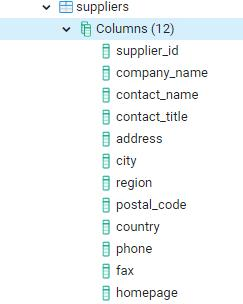Επειδή λοιπόν ζητάμε μεμονωμένες στήλες από τον πίνακα suppliers, αντί να χρησιμοποιήσουμε αστερίσκο απλά γράφουμε τα ονόματα των στηλών. Η σειρά με την οποία θα γράψετε τα ονόματα θα είναι και η σειρά με την οποία θα εμφανιστούν οι στήλες στην οθόνη σας.
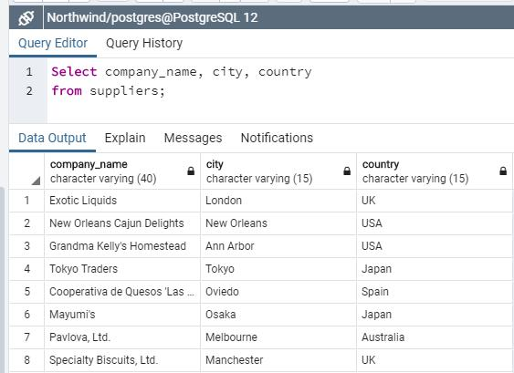Τώρα επιθυμούμε να δούμε μόνο τις χώρες στις οποίες η εταιρεία έχει πελάτες. Το λογικό θα ήταν να γράφατε το εξής απλό query:
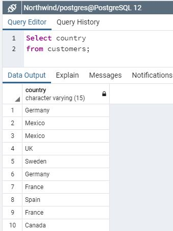Αν και λαμβάνουμε την πληροφορία που θέλουμε θα πρέπει εμείς να ψάξουμε για τις χώρες που υπάρχουν μέσα στην στήλη country γιατί στο αποτέλεσμα υπάρχουν ονόματα χωρών που εμφανίζονται πολλαπλές φορές. Σε κάθε χώρα μπορεί να έχουμε περισσότερους από έναν πελάτη και αυτό είναι λογικό. Εμείς όμως επιθυμούμε να δούμε το σύνολο των χωρών χωρίς όμως τις διπλές ή τριπλές εγγραφές. Πως μπορούμε να το κάνουμε αυτό?
Για να λάβουμε σαν αποτέλεσμα μοναδικές τιμές πρέπει να προσθέσουμε την λέξη DISTINCT μπροστά από το όνομα της στήλης. Η λέξη DISTINCT αυτόματα φιλτράρει τα δεδομένα και δείχνει κάθε διαφορετική τιμή της στήλης μια μόνο φορά. Με άλλα λόγια το αποτέλεσμα είναι οι μοναδικές τιμές της στήλης.
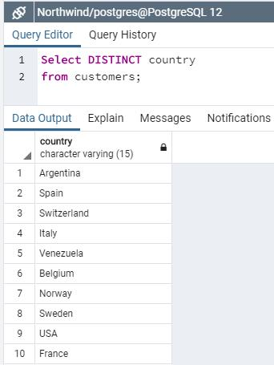Η λέξη DISTINCT εφαρμόζεται μόνο σε μια στήλη. Αυτό σημαίνει ότι αν ζητούσαμε να δούμε τις πόλεις αλλά και τις χώρες στις οποίες η εταιρεία έχει πελάτες, αλλά θέλαμε να δούμε μοναδικές τιμές για τις πόλεις τότε το query μας θα ήταν το εξής:
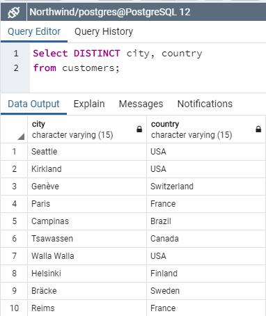Αν τώρα θέλουμε να γνωρίζουμε όχι μόνο τις μοναδικές χώρες αλλά και τον συνολικό αριθμό των διαφορετικών χωρών στις οποίες η εταιρεία έχει πελάτες τότε πρέπει να προσθέσουμε άλλη μια λέξη που ονομάζεται COUNT. Στην ουσία το COUNT( ) είναι ένα function το οποίο δέχεται σαν παράμετρο στην παρένθεση του την στήλη στην οποία θα εφαρμοστεί. Ας δούμε πρώτα πως εφαρμόζεται στην στήλη city.
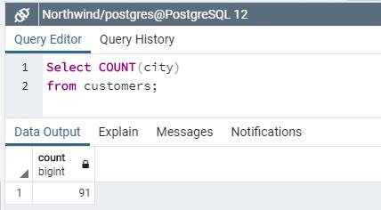Ο αριθμός που εμφανίζεται περιέχει όλες τις χώρες που είναι αποθηκευμένες στον πίνακα μαζί με τις διπλές και τριπλές τιμές τους. Αν τώρα θέλουμε να δούμε σε πόσες συνολικά μοναδικές χώρες έχει η εταιρεία σαν πελάτες, τότε μπορούμε να συνδυάσουμε το COUNT με το DISTINCT
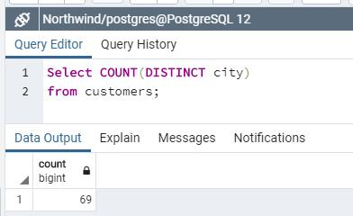Αν τώρα θέλουμε να βρούμε τον συνολικό αριθμό γραμμών από δεδομένα που περιέχει ένας πίνακας τότε μπορούμε να χρησιμοποιήσουμε το COUNT( * ). Συνήθως χρησιμοποιούμε αυτή την επιλογή όταν θέλουμε να βρούμε τον πραγματικό αριθμό γραμμών δεδομένων μέσα σε ένα πίνακα.
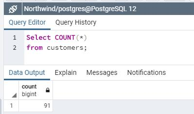Φυσικά με το SELECT μπορούμε να κάνουμε πολλά περισσότερα. Όπως για παράδειγμα να κάνουμε αριθμητικές πράξεις. Μην ξεχνάτε ότι το SELECT δεν επηρεάζει τα δεδομένα μας στους πίνακες. Οπότε μπορούμε να δοκιμάσουμε διάφορα υποτιθέμενα σενάρια και να δούμε τα αποτελέσματα τους στην οθόνη μας.
Μια από τις πληροφορίες που θέλουμε να λάβουμε από τα δεδομένα της Northwind είναι να δούμε πόσες μέρες πέρασαν από τότε που έλαβε η εταιρεία μια παραγγελία μέχρι να την στείλει. Οι παραγγελίες βρίσκονται στον πίνακα Orders.
Όπως βλέπουμε από τα δεδομένα του πίνακα Orders υπάρχουν οι στήλες order_date και shipped_date όμως δεν υπάρχει η διαφορά τους. Μπορούμε όμως να δημιουργήσουμε εμείς μια καινούργια στήλη που θα είναι η αφαίρεση της order_date από την shipped_date. Για να γνωρίζουμε για ποιον πελάτη είναι η κάθε παραγγελία, θα προσθέσουμε και την στήλη customer_id.
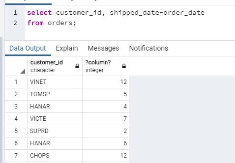Επειδή η δεύτερη στήλη είναι δημιουργία της αφαίρεσης των δύο στηλών βλέπετε πως το όνομα είναι κάπως περίεργο. Μπορούμε να δώσουμε ένα ψευδώνυμο (alias) στην στήλη χρησιμοποιώντας την λέξη as και αμέσως μετά το όνομα που θέλουμε να έχει η καινούργια μας στήλη. Μπορούμε επίσης να δώσουμε alias ονόματα και σε στήλες που ήδη υπάρχουν στον πίνακα. Συνήθως το κάνουμε αυτό γιατί κάποιες στήλες αντί για customer_id ίσως έχουν ονομαστεί cust_id και θέλουμε στο τελικό report που θα εμφανιστεί στην οθόνη να είναι ξεκάθαρη η περιγραφή των δεδομένων ανά στήλη.
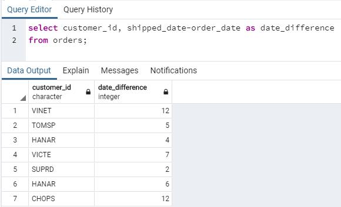Πριν κλείσουμε, θα ήθελα να αναφερθώ σε έναν εύκολο τρόπο για να γράφετε τις στήλες ενός πίνακα στο queries. Για να μην κάνετε κάποιο λάθος στα ονόματα των στηλών, μπορείτε απλά να τα κάνετε drag and drop από τα columns στον query editor.
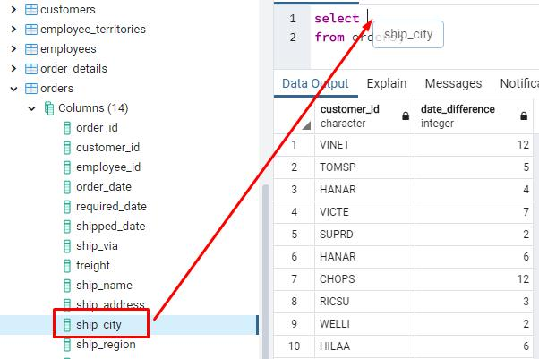